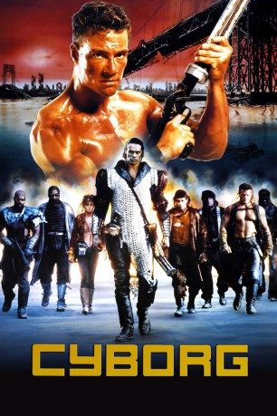
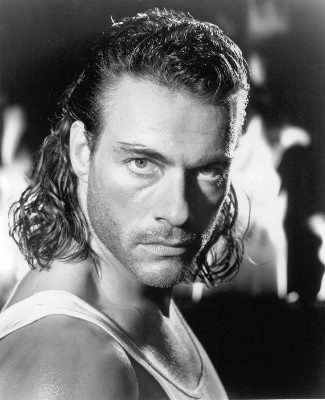
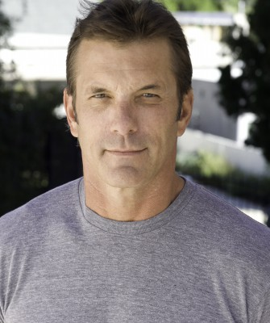
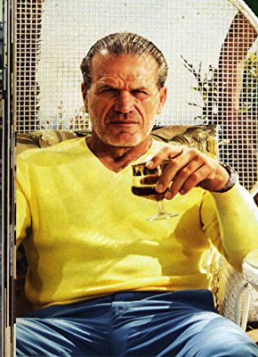

#2899 Cyborg
 
 IMDB-Wertung: 5.1 / 10
IMDB-Wertung: 5.1 / 10  Metascore: 0
Metascore: 0 
In der Welt nach dem atomaren Overkill sind die wenigen Überlebenden von einer tödlichen Seuche bedroht. Die "Letzten der Alten Welt" schicken einen weiblichen Cyborg, ein halbelektronisches Zwitterwesen, um das rettende Serum zu besorgen. Die "Piraten" unter der Führung des grausamen Fender sind ebenfalls an dem Heilmittel interessiert. In ihren Händen würde es die Zementierung der herrschenden apokalyptischen Zustände garantieren. Das glückliche Ende der Mission des Cyborgs wird durch Gibson, den "Slinger" (Revolvermann) ermöglicht. Gibson hatte noch eine private Rechnung mit Fender, der seine Frau und deren Kinder töten ließ, offen. Dabei findet er sogar seine totgeglaubte Stieftochter wieder.
Jahr: 1989
Dauer: 82 Minuten
FSK: 16
Land: USA Studio: Cannon Group, TheTonspuren: DD5.1 - ,
Untertitel: Deutsch,
Auflösung: 1080p (1920x912) Größe: 3215 MB
Genre: Action, Thriller, Sci-Fi
Regisseur: Albert Pyun
Drehbuch: Albert Pyun
Soundtrack: Kevin Bassinson
Darsteller:
-  Jean-Claude Van Damme als Gibson Rickenbacker
- Alex Daniels als Marshall Strat
- Dayle Haddon als Pearl Prophet
 Ralf Moeller als Brick Bardo
Ralf Moeller als Brick Bardo Jophery C. Brown als Saloon Owner / Pirate / Bandit
Jophery C. Brown als Saloon Owner / Pirate / Bandit-  Matt McColm als Pirate / Bandit
- Deborah Richter als Nady Simmons
- Vincent Klyn als Fender Tremolo
- Blaise Loong als Furman Vux / Pirate / Bandit
- Haley Peterson als Haley
- Terrie Batson als Mary
- Jackson 'Rock' Pinckney als Tytus / Pirate / Bandit
- Janice Graser als Vorg
- Robert Pentz als Base / Pirate / Bandit
- Sharon K. Tew als Prather / Pirate / Bandit
- Chuck Allen als Vondo / Pirate / Bandit
-  Stefanos Miltsakakis als Xylo / Pirate / Bandit
- Kristina Sebastian als Young Haley
- Thomas Barley als Willy
- Dale Frye als Sather / Pirate / Bandit
- Jim Creech als Roland Pick
- Karen Spell als Pirate / Bandit
- James Irwin als Pirate / Bandit
- Johnny Grady Jr. als Pirate / Bandit
- Michael Halford als Pirate / Bandit
- O.D. Wilson als Pirate / Bandit
- Bruce Frye als Pirate / Bandit
- Tim Gilbert als Pirate / Bandit
- Bill Morrison als Pirate / Bandit
- Tommy Evans als Pirate / Bandit
Datei: X:\1989\Cyborg (1989, FSK16, 1920x912).mkv seit 30.12.2015
Festplatte: HD 1987-1991
 Es gibt insgesamt 54 Filme in der Gruppe '1989'
Es gibt insgesamt 54 Filme in der Gruppe '1989'